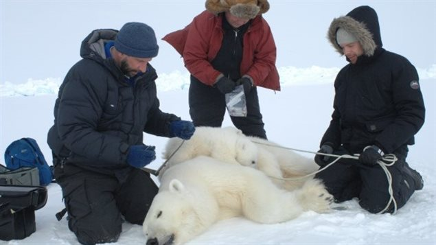
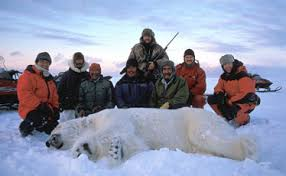
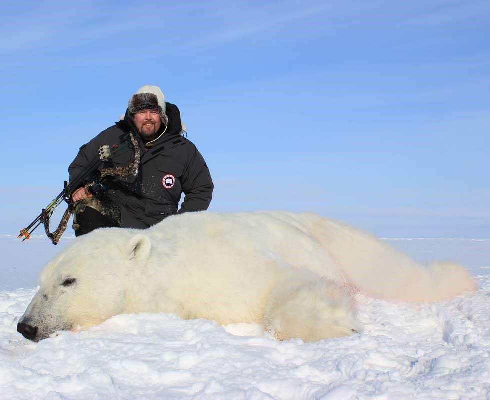

|  | Amenazas Tradicionalmente, los osos polares fueron cazados por los esquimales y otros pueblos árticos, por su carne y piel, evitando ingerir el hígado, que por contener niveles extremadamente altos de retinol (forma de vitamina A encontrada en miembros del reino animal) resulta peligroso consumirlo para el ser humano. Los colonos europeos comenzaron a matarlos también por deporte y para evitar sus incursiones en los poblados, donde podían robar comida o atacar a los animales domésticos. En raras ocasiones se dieron ataques contra humanos, aunque la gran mayoría de éstos fue obra de animales heridos previamente por los propios hombres. La UICN considera que el número de osos polares se ha reducido en al menos un 30 % en los últimos 45 años. Para 2008 la población se calculaba entre 20 000 y 25 000 individuos. Hasta hace algunos años, los osos polares se cazaban desde embarcaciones de motor, avionetas e incluso helicópteros. Esta caza masiva puso la especie al borde de la extinción, por lo que acabó prohibiéndose en ciertos países como Rusia y Noruega, y regulándose en los demás. En Canadá, país que presenta la mayor parte de la población mundial de osos polares, se permite a los inuit cazar un cierto nûmero de ejemplares. De igual manera, en 2010 se autorizó a las poblaciones indígenas de Estados Unidos y Rusia mediante un acuerdo entre ambos países una cuota anual de 29 ejemplares, cuota anulada recientemente por Rusia, que íbe totalmente la caza de osos polares en su territorio. También se persigue el uso de cebos envenenados para matar a los osos. |
|---|---|
|  | |
|  |
{kind=link}
{kind=link}
{kind=link}